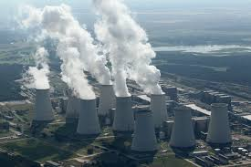
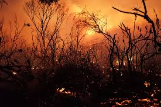
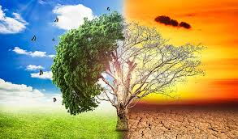
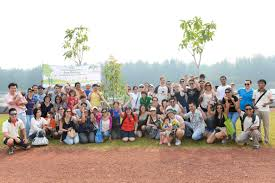
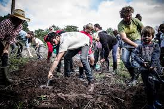
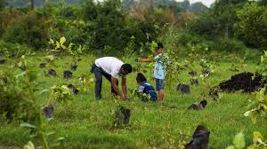
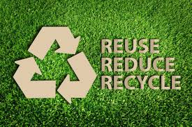

(We believe in a safe climate and a better future — a just, prosperous, and equitable world built with the power of ordinary people. Help us get there, donate now )
Global warming is the long-term heating of Earth’s climate system observed since the pre-industrial period (between 1850 and 1900) due to human activities, primarily fossil fuel burning, which increases heat-trapping greenhouse gas levels in Earth’s atmosphere. The term is frequently used interchangeably with the term climate change, though the latter refers to both human- and naturally produced warming and the effects it has on our planet. It is most commonly measured as the average increase in Earth’s global surface temperature.
What causes global warming?
  
Global warming occurs when carbon dioxide (CO2) and other air pollutants and greenhouse gases collect in the atmosphere and absorb sunlight and solar radiation that have bounced off the earth’s surface. Normally, this radiation would escape into space—but these pollutants, which can last for years to centuries in the atmosphere, trap the heat and cause the planet to get hotter. That's what's known as the greenhouse effect.
DANGERS FROM GLOBAL WARMING.
According to the National Climate Assessment, human influences are the number one cause of global warming, especially the carbon pollution we cause by burning fossil fuels and the pollution-capturing we prevent by destroying forests. The carbon dioxide, methane, soot, and other pollutants we release into the atmosphere act like a blanket, trapping the sun's heat and causing the planet to warm. Evidence shows that 2000 to 2009 was hotter than any other decade in at least the past 1,300 years. This warming is altering the earth's climate system, including its land, atmosphere, oceans, and ice, in far-reaching ways.
WHAT WE DO?
Our mission: Green Defenders is a global, independent campaigning organization that uses peaceful protest and creative communication to expose global environmental problems and promote solutions that are essential to a green and peaceful future.
 


Our History
Green Defenders was founded in 2008 by a group of school friends in India along with author Bill McKibben, who wrote one of the first books on global warming for the general public. The goal was to build a global climate movement.Green Defenders are those who defends the green.Green Defenders quickly became a planet-wide collaboration of organizers, community groups and regular people fighting for a fossil free future.
Our Work
That was 12 years ago, and in that time, Green Defenders has indeed changed the world. And we continue to make the world a better place. Our committed activists and supporters have come together to ban commercial whaling, convince the world’s leaders to stop nuclear testing, protect Antarctica, and so much more.
Our Volunteers
We work with thousands of volunteers who are on the inside track of our campaigns. Whether you’ve been an activist for decades or you’re just starting and want to learn how you can help,click in here.
Reviews
Aryajeet Ghosh
Thank you so much for all the great work you do to highlight the need for action on the climate. I would like to agree with those who ask you to add the amazing work of Citizens Climate Lobby to your list. It is democracy in action addressing climate change. It may be our greatest hope to restoring health to our troubled planet. It has the support of not only Bill McKibben, but also James Hansen who says: ".Most impressive is the work of Citizens Climate Lobby, a relatively new, fast-growing, nonpartisan, nonprofit group with [102] chapters across the United States and Canada. If you want to join the fight to save the planet, to save creation for your grandchildren, there is no more effective step you could take than becoming an active member of this group. HONOURED To Be a Volunteer Of This Organisation!"
Rajanya Pramanik
It’s very informative and it will help many others, we are
also dealing in same field hence found this informative to add in our process,also.Will Be a Part Of this organisation soon!
Aksa Biju
One of the biggest responses we need to make is to "remove the fuel from the fire"---we need governments to throw off the shackles and controls of the fossil fuel industry. We need subsidies removed and heavy taxes placed upon them. We need regulations that not only give tax incentives to sustainable clean energy like solar and wind and water/tide generation, but also *mandates* that require electricity providers to switch to these systems. Many countries (Germany for instance, Scotland, etc) as well as cities and states, are proving the switch to these energy sources *can* be done quickly and economically.You all doing a nice job!Best Of Luck!
Swargaraj Dutta
SAYAN SAHA,
Your guests are all raising huge amounts of funding to support ads to say climate change is happening. However, every one of them knows that CryoRain Inc. has the technology to do something about climate change. It is under my issued patent USP 7,631,506 where we rain liquid Nitrogen to form clouds of pure, inert, cryogenically cold Nitrogen (N2) gas and with it allows air dopping N2, releasing N2 on the ground to displace Oxygen (O2) and to freeze things, and to release it underground. Our four tasks to reverse sea level rise and return climae effects include worldwide ending of coal mine and other embedded fires that are heating the earth causing the meltin of the South Pole Polar Cap, Greenland glaciers, and the icefields over the North Pole; and then, to clear the atmosphere we rapidly end wildland fires and other major fires, stop flaring and collect the light fuels and sell them, and abate smoke for coal and other fossil and bio-fuels collecting the water and Carbon dioxide to feed into greenhouses for enhanced growth of vegetables, fruit and flowers year around to feed local communities. These last three will reduce incidence of COPD. We are hindered by US administrators refusing to consider using these technologies because of the $cience (false statements channeling money) engrained in Federal regulations.
Padmaksh Pandey
We need a conversion of vehicles to electricity, and a distribution system for travel so that electric vehicles can recharge quickly. We need establishment, tax breaks, and mandates to shift all vehicles to electric or other truly clean energy. We need further mandates to force us to abandon faux "green" solutions like natural gas (yes it burns cleaner, but the fracking to get it is wrecking our water supply) and bio-fuels (yes, ethanol from corn burns cleaner, but growing all that corn to make it promotes a lot of environmental damage, at the very time when our food crops are threatened by climate change.YOU ALL DOING A GOOD WORK.
Dhritiman Isor
Farming has become a huge cause of environmental contamination: crop farming uses enormous amounts of pesticides/herbicides in increasingly toxic intensity, as weeds and insects adapt to current chemicals and manufacturers increase toxicity to fight it. Factory farming of animals not only creates concentration of pollutants (methane and animal waste), but also promotes the creation of antibiotic-resistant strains (from the filth and crowded conditions, and from the doses of antibiotics fed to animals to combat diseases *from* those same filthy, crowded conditions, as well as the use of antibiotics to "fatten up" animals---4/5 of the antibiotics consumed in the U.S. are used on farm animals). Those same animals also produce methane, adding to the methane issue. Similar problems are occurring in fish farming (especially in the far East), where sewage, random industrial effluents, and various farm chemicals add to the problem of factory-farmed fish. A Volunteer now!!
Arnik Ray
Rising ocean temperatures are affecting our weather/climate, but they're also contributing to die-off of many ocean species, along with over-fishing and pollution (everything from chemicals and heavy metals washing into the oceans, to the huge plastic plumes and other garbage that still makes its way into the seas). Our oceans don't just contain animals, they also contain plants and plant-life (including some plankton) that are part of the process that converts CO2 to oxygen. I've yet to see studies that address this part of the ocean changes... but it's something we *ought* to be considering in the overall equation. Die-off of ocean plant life may have a huge impact: not only by reducing the amount of available oxygen, but also in reduction of a significant part of the cycle that cleans CO2 from the biosphere.Keep it up!
Arpita Saha
CO2 and methane are the most pressing problems in dealing with general climate change... but they don't stand alone: they're part of an interactive and inter-locking system. Certainly we absolutely *need* to stop adding fuel to the fire by replacing the systems that put large quantities of those two substances into the air and water... but in attempting to address them *directly* and contrive a *reduction* of what's already there, we need to be very very careful. We *need* to consider, in designing solutions to try, the effects that solution may have on the entire ecosystem as well as the weather.I am there for you all.Continue this good work mate!